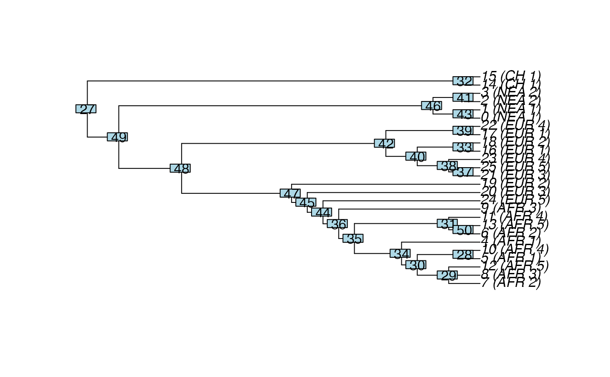

Convert a tree in the tree sequence to an object of the class phylo
Source: R/tree-sequences.R
ts_phylo.RdConvert a tree in the tree sequence to an object of the class phylo
Arguments
- ts
Tree sequence object of the class
slendr_ts- i
Position of the tree in the tree sequence. If
mode = "index", an i-th tree will be returned (in zero-based indexing as in tskit), ifmode = "position", a tree covering the i-th base of the simulated genome will be returned (again, in tskit's indexing).- mode
How should the
iargument be interpreted? Either "index" as an i-th tree in the sequence of genealogies, or "position" along the simulated genome.- labels
What should be stored as node labels in the final
phyloobject? Options are either a population name or a tskit integer node ID (which is a different thing from aphyloclass node integer index).- quiet
Should ape's internal phylo validity test be printed out?
Examples
init_env()
#> The interface to all required Python modules has been activated.
# load an example model with an already simulated tree sequence
slendr_ts <- system.file("extdata/models/introgression_slim.trees", package = "slendr")
model <- read_model(path = system.file("extdata/models/introgression", package = "slendr"))
# load the tree-sequence object from disk
ts <- ts_read(slendr_ts, model) %>%
ts_recapitate(Ne = 10000, recombination_rate = 1e-8) %>%
ts_simplify()
# extract the 1st tree from a given tree sequence, return ape object
tree <- ts_phylo(ts, i = 1, mode = "index", quiet = TRUE)
tree
#>
#> Phylogenetic tree with 26 tips and 24 internal nodes.
#>
#> Tip labels:
#> 25 (EUR_5), 24 (EUR_5), 23 (EUR_4), 22 (EUR_4), 21 (EUR_3), 20 (EUR_3), ...
#> Node labels:
#> 83, 28, 27, 30, 31, 32, ...
#>
#> Rooted; includes branch length(s).
# extract the tree at a 42th basepair in the given tree sequence
tree <- ts_phylo(ts, i = 42, mode = "position", quiet = TRUE)
# because the tree is a standard ape phylo object, we can plot it easily
plot(tree, use.edge.length = FALSE)
ape::nodelabels()
